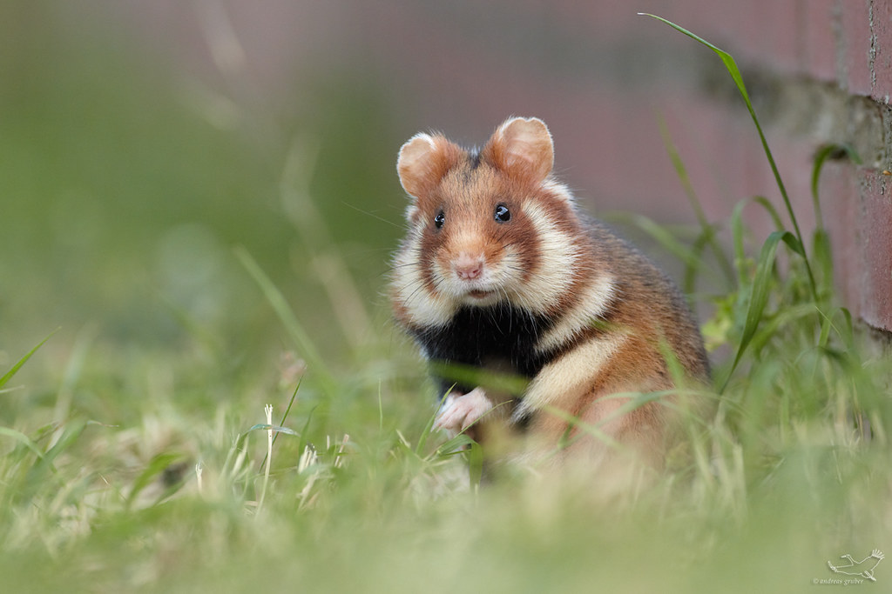

html>
Страница про вид: хомяки обыкновенные
Хомяки обыкновенные
Обыкновенный степной, или полевой, хомяк ведёт ночной образ жизни и является самым крупным представителем этого семейства. Дни он в основном проводит в норе, а ночью выходит на промысел.

Внешний вид
Самый крупный представитель подсемейства хомяков. Длина тела у взрослых самцов 27—34 см, хвоста 3—8 см, масса тела в среднем 700 г. Хвост толстый в основании, быстро утончается к концу, покрыт короткими и жёсткими волосами. Морда умеренной длины. Ушные раковины довольно короткие, покрыты тонкими, темноватыми волосами. Кисть и стопа широкие, а на пальцах хорошо развитые когти.
Волосяной покров густой и мягкий. Окраска шкуры яркая, контрастная: верх тела однотонный, рыжевато-бурый, брюшко чёрное. Спереди на боках — два больших светлых пятна, обычно разделённые участком чёрного меха. По светлому пятну имеется также по бокам головы и за ушами, иногда и в области лопаток. Часто встречаются полностью чёрные экземпляры (меланисты) или чёрные экземпляры с белыми пятнами на лапах и горле. Описано более 10 подвидов. Окраска хомяков в пределах ареала светлеет с севера на юг; размеры тела растут с запада на восток и с севера на юг.
Среда обиитания
Дикий хомяк широко распространен от Южной и Центральной Европы до северо-запада Китая. Он предпочитает лесостепи, степи и разнотравные луга. В настоящее время ареал обитания грызуна несколько расширился. Это связано с массовым вырубкой лесов.
Хомяка не пугает близость человека, поэтому он охотно осваивает территории приусадебных участков, полей, садов, огородов. При недостаточном количестве корма он может поселиться в жилом помещении.
Питание
Хомяк всеяден, однако в его рационе преобладают растительные корма. Помимо них поедает насекомых и их личинок, мелких позвоночных (мышей, рептилий и амфибий). К осени полностью переходит на питание семенами и клубнями, которые запасает в значительных количествах: от 0,5 до 11—16 кг. Известны кладовые хомяка с запасами зерна или картофеля до 90 кг. Ими хомяк кормится зимой, когда временно просыпается от спячки, а также весной до появления свежих кормов.
Корма хомяк носит в защёчных мешках, иногда более чем за километр. В его защёчных мешках помещается до 46 г пшеницы. В кладовых находили отборное вышелушенное зерно (реже целые колосья), горох, рис, просо, гречиху, люпин, кукурузу, чечевицу, картофель. Разные сорта семян хомяк складывает отдельно.
Можно ли содержать в домашних услвиях обычного хомяка?